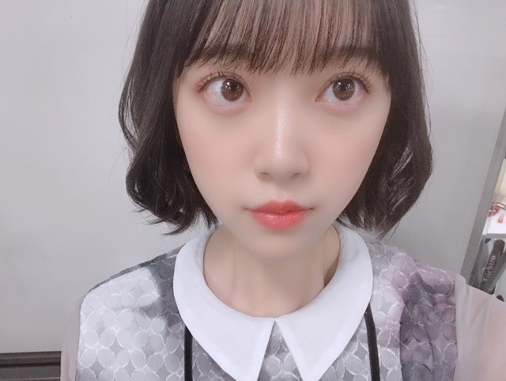
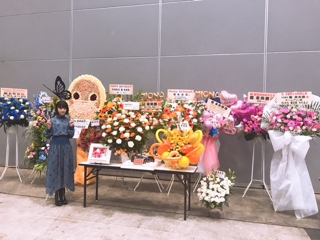

2018/1031Wedうめぼししょっぱいやん
最近、

髪をランダムに巻くのにはまっています☺︎

生誕祭
お花たくさんで
びっくり！
ありがとうございました☺︎
花は贈る側も貰う側も相手のことを
考えるきっかけになるし
そこに愛とか絆とかいろんな意味合いが
あると思っていて、私は大好きです

レーンも私の好きな"美術館風"で
すてき〜

生誕委員のみなさん☺︎
私の家族みたいな存在！
忙しいのに色々考えてくださり
本当にありがとうございます
生誕祭を見てくださったみなさんも
ありがとう！
手紙はだいすきな絢音が読んでくれて
だいすきなみり愛が動画を回して
くれていました
誕生日が過ぎても日々いろんな方から
おめでとうという言葉や
すてきなプレゼントもいただけて...
本当に幸せ者です☺︎

あやの♡
このあと、れのにも抱きつかれたから
また載せますね〜
22歳、頑張らなあかんね！
よーし。
では！
2018/10/31 17:36
コメント(380)
ブログ更新ありがとう。
改めて誕生日おめでとう。素敵な1年になるよう祈ってますね。
さすがに朝が寒くなったので、体調崩さないように気を付けてね。
改めて誕生日おめでとう。素敵な1年になるよう祈ってますね。
さすがに朝が寒くなったので、体調崩さないように気を付けてね。
未央奈に家族みたいな存在と言ってもらえるなんて………生誕委員になりたい。
未央奈の事を応援するしか出来ないけど、ホントに未央奈の事大好きで
早く握手会で未央奈に会いたいな
未央奈大好きやでぇ～
未央奈の事を応援するしか出来ないけど、ホントに未央奈の事大好きで
早く握手会で未央奈に会いたいな
未央奈大好きやでぇ～
お誕生日おめでとうー！
この前の横浜の個握の時握手できて嬉しかったよー！
映画絶対見に行くからね！楽しみにしてるよ！
22歳になっても未央奈ちゃんらしく頑張ってね！
この前の横浜の個握の時握手できて嬉しかったよー！
映画絶対見に行くからね！楽しみにしてるよ！
22歳になっても未央奈ちゃんらしく頑張ってね！
え、可愛い。
みおなちゃん更新ありがとう╰(*´︶`*)╯♡
うめぼししょっぱかったのかな？笑(*´꒳`*)
髪のランダム巻き可愛かです
生誕祭のお花綺麗ですね(*ﾟ▽ﾟ*)
レーンの装飾も素敵ですな･:*+.\(( °ω° ))/.:+
お手紙は絢音ちゃんでみり愛ちゃんは動画を撮ってくれてたんですね(๑˃̵ᴗ˂̵)
改めてお誕生日おめでとうございます！！
あやのちゃんとの写真もありがと〜
22歳のみおなちゃんも応援しております
うめぼししょっぱかったのかな？笑(*´꒳`*)
髪のランダム巻き可愛かです
生誕祭のお花綺麗ですね(*ﾟ▽ﾟ*)
レーンの装飾も素敵ですな･:*+.\(( °ω° ))/.:+
お手紙は絢音ちゃんでみり愛ちゃんは動画を撮ってくれてたんですね(๑˃̵ᴗ˂̵)
改めてお誕生日おめでとうございます！！
あやのちゃんとの写真もありがと〜
22歳のみおなちゃんも応援しております
更新ありがとう！
髪型凄いかわいい 好きです!!
寒くなってきたから体調気をつけてねm(__)m
髪型凄いかわいい 好きです!!
寒くなってきたから体調気をつけてねm(__)m
アレンジ楽しんでるね～。
生誕祭の雰囲気っていいよね～。あまり参加出来ていないけど・・
生誕祭の雰囲気っていいよね～。あまり参加出来ていないけど・・
ブログ更新ありがと〜！
僕もこの前20歳の誕生日を迎えました！
堀さんも22歳の誕生日改めておめでとうございますね！
来年も実りのある年にしていきたいですね〜
髪巻いてる堀さん可愛すぎ！ 癒されます〜。ではでは。
僕もこの前20歳の誕生日を迎えました！
堀さんも22歳の誕生日改めておめでとうございますね！
来年も実りのある年にしていきたいですね〜
髪巻いてる堀さん可愛すぎ！ 癒されます〜。ではでは。
生誕祭の写真と、様子を伝えてくれてありがとー
幸せそう^^
幸せそう^^
ブログありがとう。
生誕祭、楽しんでもらえたかな？
喜んでもらえたのなら、こちらも嬉しいです。
去年、生誕委員をやって、正直今年度はやるかどうか迷ってた。
それで、未央奈にちょっと聞いてみたらすごく嬉しそうな顔するもんだから、「やりたい」というより「やらなきゃ」って思って。
でもやってみて思ったのは、未央奈の喜んでる顔が見れてよかったってこと。
未央奈が笑顔になるのが嬉しくて生誕やってるようなものだったから。
美術館も喜んでくれたみたいでよかった。
「家族みたい」って、すごく嬉しい言葉だなぁ～(T-T)
そういう風に思っててくれたんだね。
ありがとう。
お手紙とカメラでプリン会だったね～
ここぞとばかりに #プリン会最高かよ
いろいろ考えるのも、未央奈のためだと思えば全然苦じゃないよ(笑)
来年は就職活動でどうなるかわかんないけど、どんな形であれ未央奈を応援していくからよろしくね！
改めて、お誕生日おめでとう！
では✋
てんちょ
生誕祭、楽しんでもらえたかな？
喜んでもらえたのなら、こちらも嬉しいです。
去年、生誕委員をやって、正直今年度はやるかどうか迷ってた。
それで、未央奈にちょっと聞いてみたらすごく嬉しそうな顔するもんだから、「やりたい」というより「やらなきゃ」って思って。
でもやってみて思ったのは、未央奈の喜んでる顔が見れてよかったってこと。
未央奈が笑顔になるのが嬉しくて生誕やってるようなものだったから。
美術館も喜んでくれたみたいでよかった。
「家族みたい」って、すごく嬉しい言葉だなぁ～(T-T)
そういう風に思っててくれたんだね。
ありがとう。
お手紙とカメラでプリン会だったね～
ここぞとばかりに #プリン会最高かよ
いろいろ考えるのも、未央奈のためだと思えば全然苦じゃないよ(笑)
来年は就職活動でどうなるかわかんないけど、どんな形であれ未央奈を応援していくからよろしくね！
改めて、お誕生日おめでとう！
では✋
てんちょ
学生です
短い髪をどのようにして巻いていますか？？？？？
難しくてできません
短い髪をどのようにして巻いていますか？？？？？
難しくてできません
ガンバれなアカンでー！！俺もガンバるからさー
堀ちゃん
今日もお疲れ様です（レコメンだから現在進行中ですね）
髪巻くのがマイブームなんですね
最近寒いですが、寒いのメリットは湿度が低いので癖っ毛の人には髪型が崩れにくいというメリットがあります
この時期は癖っ毛の人でもいろんな髪型を試しやすいのです（自分は超癖っ毛ですが堀ちゃんはどうだっけ？）
髪巻いたタイプの堀ちゃんも良きです
生誕祭は行けなかったけどたくさんの人にお祝いしてもらえてよかったです
自分ももうすぐ22歳になりますが、なんか気付いたら自分が大人になっていたって感じで、しっかりしなきゃなって思います
堀ちゃんも一足先に22歳頑張って下さい
レコメン聴いてるよー
ありがとうございました
今日もお疲れ様です（レコメンだから現在進行中ですね）
髪巻くのがマイブームなんですね
最近寒いですが、寒いのメリットは湿度が低いので癖っ毛の人には髪型が崩れにくいというメリットがあります
この時期は癖っ毛の人でもいろんな髪型を試しやすいのです（自分は超癖っ毛ですが堀ちゃんはどうだっけ？）
髪巻いたタイプの堀ちゃんも良きです
生誕祭は行けなかったけどたくさんの人にお祝いしてもらえてよかったです
自分ももうすぐ22歳になりますが、なんか気付いたら自分が大人になっていたって感じで、しっかりしなきゃなって思います
堀ちゃんも一足先に22歳頑張って下さい
レコメン聴いてるよー
ありがとうございました
読んだよ～。
写真もステキです、がんば◎
写真もステキです、がんば◎
綾ちゃんに抱きつかれてる時の顔、好き！
かわいい～！
かわいい～！
お誕生日おめでとうございます！
22歳ですねー笑 若さと大人らしさをあわせ持つ1番良い年齢ではないでしょうか？
お仕事もプライベートも充実した1年になることをお祈りします！！
ちなみに自分はしょっぱい梅干しよりも酸っぱい梅干しの方が好きかも…笑
それでは今年も頑張ってくださいね 失礼します。
失礼します。
いつまる
22歳ですねー笑 若さと大人らしさをあわせ持つ1番良い年齢ではないでしょうか？
お仕事もプライベートも充実した1年になることをお祈りします！！
ちなみに自分はしょっぱい梅干しよりも酸っぱい梅干しの方が好きかも…笑
それでは今年も頑張ってくださいね
いつまる
未央奈の夢がもっともっと叶うことが出来るように
応援し続けます。
22歳、飛躍するその姿を見続けたいです。
いつもありがとう、生きる糧です。
応援し続けます。
22歳、飛躍するその姿を見続けたいです。
いつもありがとう、生きる糧です。
遅ればせながらだけど、誕生日おめでとぉ♪♪ メンバーはもちろんのこと、たっくさんの人達に愛されてる堀ちゃん(*´-`) 新たな歳も、堀ちゃんが充実した日々を送れますように☆
未央奈ちゃんおつかれさま ！
わたしも今同じくらいの髪の長さだから
明日は巻いてみようかなぁ♡
MURUAのワンピも元々気になってたけど 、
未央奈ちゃんが着てるの見たらもっと欲しくなっちゃった〜
明日もがんばってね♡
わたしも今同じくらいの髪の長さだから
明日は巻いてみようかなぁ♡
MURUAのワンピも元々気になってたけど 、
未央奈ちゃんが着てるの見たらもっと欲しくなっちゃった〜
明日もがんばってね♡
みおなおめでとう！
同じ岐阜県出身としても嬉しいし、また郡上に遊びにきてな～。地元トークしたい！
れのとの写真みたいっす！！
同じ岐阜県出身としても嬉しいし、また郡上に遊びにきてな～。地元トークしたい！
れのとの写真みたいっす！！
未央奈～こんばんは！
ぽてとです！
生誕祭凄い！
未央奈が皆に愛されてるなー！
って感じた♪
22歳も飛躍の年になりますように(^^)
ぽてとです！
生誕祭凄い！
未央奈が皆に愛されてるなー！
って感じた♪
22歳も飛躍の年になりますように(^^)
ほり！！かわいいなぁ...(´ρ`)
未央奈更新ありがとう〜生誕祭良かったねランダム巻きかわいいね大好きだよ。会いたい！12月が楽しみだあ。
お誕生日おめでとう
体調が良く無かったので、握手会行けなかった～(;_;)
22歳も頑張ってね
体調が良く無かったので、握手会行けなかった～(;_;)
22歳も頑張ってね
ブログありがとう
先週パシフィコでは４部、５部でお邪魔しました。
制服コスプレとても似合ってて可愛かったよ
今レコメン聞いてます。映画楽しみだね。
先週パシフィコでは４部、５部でお邪魔しました。
制服コスプレとても似合ってて可愛かったよ
今レコメン聞いてます。映画楽しみだね。
みおなブログ更新ありがとう
改めて誕生日おめでとうございます。
プリン会メンバーの写真もまた欲しいです！！
この1年も良い年でありますように！
改めて誕生日おめでとうございます。
プリン会メンバーの写真もまた欲しいです！！
この1年も良い年でありますように！
未央奈～☆☆
幸せそうな未央奈を見られて、めっちゃ幸せだ～！！
幸せそうな未央奈を見られて、めっちゃ幸せだ～！！
みおなちゃんお誕生日おめでとう。
ハロウィン楽しかったぁーーー
でも、レコメン聴き逃しちゃったよ泣
頑張れ22歳！！！
俺は頑張る17歳になる！！
でも、レコメン聴き逃しちゃったよ泣
頑張れ22歳！！！
俺は頑張る17歳になる！！
未央奈～ こんにちは
ハッピーハロウィン、おつかれさまでした。
先日の個握では、コスプレ握手会そして、生誕祭改めて、お誕生日おめでとうございます。
そして、レコメン生放送、おつかれさまでした。
来春のドラマ出演のことが紹介されていましたが、ノリさんも曰く、来年は映画にドラマに、どうやら素晴らしい１年になりそうですね。ホント楽しみです。
でも、その前に、いよいよ２２nd新曲「帰り道は遠回りしたくなる」の発売が近づいてきました。テレビ初公開も間近ですね。
ハッピーハロウィン、おつかれさまでした。
先日の個握では、コスプレ握手会そして、生誕祭改めて、お誕生日おめでとうございます。
そして、レコメン生放送、おつかれさまでした。
来春のドラマ出演のことが紹介されていましたが、ノリさんも曰く、来年は映画にドラマに、どうやら素晴らしい１年になりそうですね。ホント楽しみです。
でも、その前に、いよいよ２２nd新曲「帰り道は遠回りしたくなる」の発売が近づいてきました。テレビ初公開も間近ですね。
ほりっぴ～、ナンチです♪
ブログ更新ありがとう～
そして何回でも言うよ
Happy birthday
素敵な1年になりますように
ブログ更新ありがとう～
そして何回でも言うよ
Happy birthday
素敵な1年になりますように
みおな☆★☆タンポポだけども～♪♪♪
( ^-^)ノ∠※。.:*:・'°☆
みおな☆happy birthday！！
(祝)22歳！！！
みおな程可愛らしい人は
見たことないよ♪♪
755でさ、レザーフェイス
泣けるって言うから
レンタルしようとしたら
バリッバリのホラーやん笑っ
笑ったわ笑
俺ホラー苦手やねん！！！
泣けますよって
紹介するみおなは
さすがだと思ったよ笑
大好きやで！！！！！！！
みおなはタンポポの人生のキキだよ！！タンポポはジジだよ♪♪
みおな猫アレルギーやけどな！！！
（*＾3＾）/～☆タンポポより
ブログ更新ありがとー！
生誕祭寝坊してしまって行けなくてごめんなさい、、来年は生誕祭委員として少しでも素敵な生誕祭にできるよう頑張ります！！
乃木恋イベントめっちゃ楽しかったです！まさか一緒にゲームできるなんてとても幸せでした また次も彼氏になれるように頑張りますね笑
生誕祭寝坊してしまって行けなくてごめんなさい、、来年は生誕祭委員として少しでも素敵な生誕祭にできるよう頑張ります！！
乃木恋イベントめっちゃ楽しかったです！まさか一緒にゲームできるなんてとても幸せでした また次も彼氏になれるように頑張りますね笑
未央奈！
生誕ブログありがとう！
ミオナ展、めちゃくちゃ良かったですね。
並んでいるときに楽しめました！
生誕祭も勿論見てましたよ！
写真にも写ってる笑
22歳も素敵な1年になりますように。
ずーっと応援してます！
それと27日のパシフィコでの制服コスプレやフワフワなベレー帽、めっちゃ可愛いかったです！
12月の握手会も行くので楽しみにしてます！
生誕ブログありがとう！
ミオナ展、めちゃくちゃ良かったですね。
並んでいるときに楽しめました！
生誕祭も勿論見てましたよ！
写真にも写ってる笑
22歳も素敵な1年になりますように。
ずーっと応援してます！
それと27日のパシフィコでの制服コスプレやフワフワなベレー帽、めっちゃ可愛いかったです！
12月の握手会も行くので楽しみにしてます！
来年からまた注目度上がると思うから気を引き締めて頑張ってね！
麗乃ちゃんとも仲良くなったんだ！これからはお姉さんとしてもっとたくさん愛でてあげてね(^^)
麗乃ちゃんとも仲良くなったんだ！これからはお姉さんとしてもっとたくさん愛でてあげてね(^^)
生誕祭は盛況で何よりでしたね。
れのチャンは妹分として可愛がってあげてね。
何となく未央奈の後継者になりそうな気がするんで・・・
れのチャンは妹分として可愛がってあげてね。
何となく未央奈の後継者になりそうな気がするんで・・・
未央奈の22歳の活躍楽しみしてるよ！
未央奈ちゃん
改めて、お誕生日おめでとうございます！
生誕祭当日は未央奈ちゃんに会って、直接おめでとうを言えることができて嬉しかったなぁ♪
22歳、素敵な歳になりますように！
心から願っております♡
改めて、お誕生日おめでとうございます！
生誕祭当日は未央奈ちゃんに会って、直接おめでとうを言えることができて嬉しかったなぁ♪
22歳、素敵な歳になりますように！
心から願っております♡
堀さん、こんばんは。ブログ更新してくれて嬉しいです。
ランダムに巻くとはTPO関係なく唐突にということでしょうか。そもそも自分の髪以外も巻くのか等々気になります。それはそうと瞳が光り輝いてますね。
たくさんの花も綺麗で、聖誕祭を（wikipediaによると聖人（一般的に、徳が高く、人格高潔で、生き方において他の人物の模範となるような人物のこと）の誕生を祝う祭り、とあったので間違いではありません。holyですし）こんなにたくさんの人に祝ってもらえて本当に良かったですね。こんなにたくさんの人と幸せを与えあうことが出来る関係なのは、堀さんがファン思いのアイドルをだからですね。堀さんがファンをいつも楽しませようとする人だから、生誕委員の方々も美術館風にしたりで堀さんや他の方を喜ばせたいと思ったんですね。堀さんが撮りたいと思った被写体とその写真とそれをファンに贈る行為のどれも私たちにとって額縁に飾る程に価値あるものですって意味かななんて思いました。
犬といえば、”ビバリーヒルズチワワ”見ました。犬の演技凄いし、話も楽しくて良かったです。野生化したチワワの族が何だか好きで、きっと族長役のチワワは「これって人種問題がテーマに隠されてますよね」って監督に言ってると思います。何より良かったのが、犬がプリンセスで飼い主が王子様で首輪が婚約指輪だというメッセージです。ディズニーが実写でやる意味が大有りで驚きました。このご時世に男と女がただ結婚しただけで「めでたしめでたし」なんて言ってたら少し古臭く感じますけど、こと犬に関しては飼い主が居れば大概「一生幸せに暮らしましたとさ」なんですよね。自分の飼い犬のことを思い出した時とか保護犬について考えた時とか、見る時期によってはぼろぼろに泣くかもしれませんね。無性に実家の犬（呼びにくい名前なので実際に”犬”と呼んでいます）撫でたくなってきました。
では、寒くなって来たので身体もいたわって下さいね。風邪予防のために好みの手袋見繕うのもいいですよ。
あと、冬至にかぼちゃ食べると風邪ひかないってことわざ？みたいなのって本当なんですかね。試してみてはいかがでしょうか。
ランダムに巻くとはTPO関係なく唐突にということでしょうか。そもそも自分の髪以外も巻くのか等々気になります。それはそうと瞳が光り輝いてますね。
たくさんの花も綺麗で、聖誕祭を（wikipediaによると聖人（一般的に、徳が高く、人格高潔で、生き方において他の人物の模範となるような人物のこと）の誕生を祝う祭り、とあったので間違いではありません。holyですし）こんなにたくさんの人に祝ってもらえて本当に良かったですね。こんなにたくさんの人と幸せを与えあうことが出来る関係なのは、堀さんがファン思いのアイドルをだからですね。堀さんがファンをいつも楽しませようとする人だから、生誕委員の方々も美術館風にしたりで堀さんや他の方を喜ばせたいと思ったんですね。堀さんが撮りたいと思った被写体とその写真とそれをファンに贈る行為のどれも私たちにとって額縁に飾る程に価値あるものですって意味かななんて思いました。
犬といえば、”ビバリーヒルズチワワ”見ました。犬の演技凄いし、話も楽しくて良かったです。野生化したチワワの族が何だか好きで、きっと族長役のチワワは「これって人種問題がテーマに隠されてますよね」って監督に言ってると思います。何より良かったのが、犬がプリンセスで飼い主が王子様で首輪が婚約指輪だというメッセージです。ディズニーが実写でやる意味が大有りで驚きました。このご時世に男と女がただ結婚しただけで「めでたしめでたし」なんて言ってたら少し古臭く感じますけど、こと犬に関しては飼い主が居れば大概「一生幸せに暮らしましたとさ」なんですよね。自分の飼い犬のことを思い出した時とか保護犬について考えた時とか、見る時期によってはぼろぼろに泣くかもしれませんね。無性に実家の犬（呼びにくい名前なので実際に”犬”と呼んでいます）撫でたくなってきました。
では、寒くなって来たので身体もいたわって下さいね。風邪予防のために好みの手袋見繕うのもいいですよ。
あと、冬至にかぼちゃ食べると風邪ひかないってことわざ？みたいなのって本当なんですかね。試してみてはいかがでしょうか。
ブログ更新ありがとうございます！
お誕生日おめでとうございます！
素敵な年になることを祈ってます(^^)
体調には気をつけて頑張ってください！
お誕生日おめでとうございます！
素敵な年になることを祈ってます(^^)
体調には気をつけて頑張ってください！
堀殿生誕祭よきよきピーナッツε=ε=(ﾉＴ▽Ｔ)ﾉ
ぼぶったんポジピース堀殿きゃわわうれぴーぽー(o￣◎￣)oバブゥ
ぼぶったんポジピース堀殿きゃわわうれぴーぽー(o￣◎￣)oバブゥ
みおちゃんこんばんは
ブログ更新ありがとう。タイトルが可愛い
なんかひらがなって可愛いよね
生誕レーンに並ぶと沢山の人から祝ってもらえる誕生日ってどんな感じなんだろう？っていつも思います。。一生そんな経験は無いだろうけど、僕は単純だから普通に嬉しいんだろうな〜
おめでとうございます！22歳も大好きだよー！！
頑張り過ぎずに楽しく過ごしてね
ブログ更新ありがとう。タイトルが可愛い
なんかひらがなって可愛いよね
生誕レーンに並ぶと沢山の人から祝ってもらえる誕生日ってどんな感じなんだろう？っていつも思います。。一生そんな経験は無いだろうけど、僕は単純だから普通に嬉しいんだろうな〜
おめでとうございます！22歳も大好きだよー！！
頑張り過ぎずに楽しく過ごしてね
堀さんが22歳！？
そりゃオイラも年を取る訳だよ･･･w
(-_-;)
そりゃオイラも年を取る訳だよ･･･w
(-_-;)
お誕生日おめでとう
22歳も素敵な一年送れるように
いつも応援してます
22歳も素敵な一年送れるように
いつも応援してます
うめぼししょっぱいけどおいしいやん。
未央奈のことずっと好きでいさせてな！
未央奈のことずっと好きでいさせてな！
堀さん、おはようございます。
土曜日は握手会お疲れさまでした。堀さん二十二歳のお誕生日をお祝いする生誕祭も盛大に執り行われたようで祝着至極です。
芸術の秋、美術好きの堀さんにふさわしい飾りつけ。生誕委員の皆さんの愛と熱意を感じます。改めてお誕生日おめでとうございます。
今日から十一月。年末の忙しさに向けていよいよラストスパートです。体調に気をつけて駆けぬけてまいりましょう。
ではまたコメント寄せます。
さらばだ、また会おう！（気球に乗って去りぬ〜）
土曜日は握手会お疲れさまでした。堀さん二十二歳のお誕生日をお祝いする生誕祭も盛大に執り行われたようで祝着至極です。
芸術の秋、美術好きの堀さんにふさわしい飾りつけ。生誕委員の皆さんの愛と熱意を感じます。改めてお誕生日おめでとうございます。
今日から十一月。年末の忙しさに向けていよいよラストスパートです。体調に気をつけて駆けぬけてまいりましょう。
ではまたコメント寄せます。
さらばだ、また会おう！（気球に乗って去りぬ〜）
堀ちゃん、かわいい〜
更新ありがとう〜！
かわいい
かわいい
コメント失礼します！
あらためて22歳おめでとう 生誕祭いきたかった...笑
これからもみおならしく頑張って下さい（＾_＾）
ずっと応援します！！
ブログ更新ありがとう
あらためて22歳おめでとう 生誕祭いきたかった...笑
これからもみおならしく頑張って下さい（＾_＾）
ずっと応援します！！
ブログ更新ありがとう


後悔の無いような一年にしたいね！
これからも頑張って！